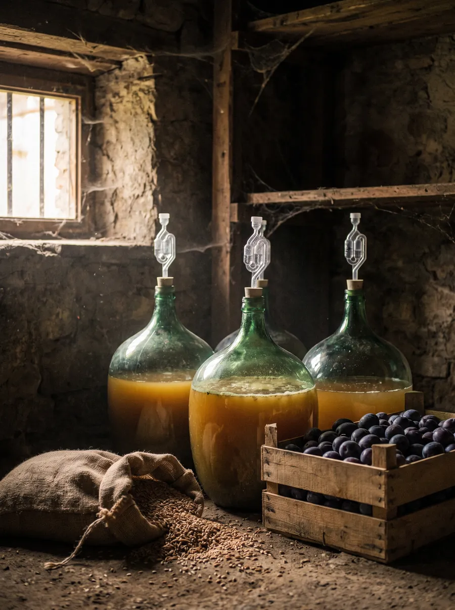
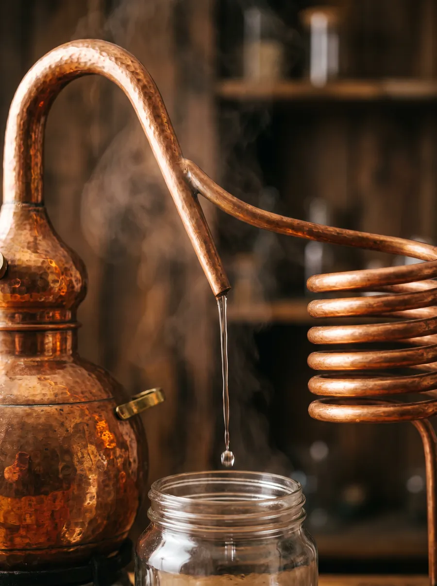
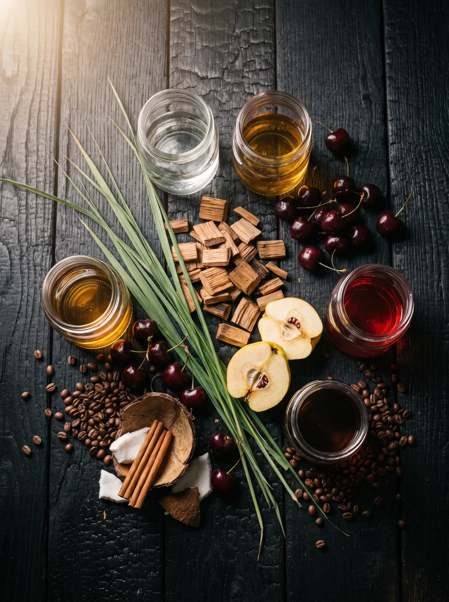
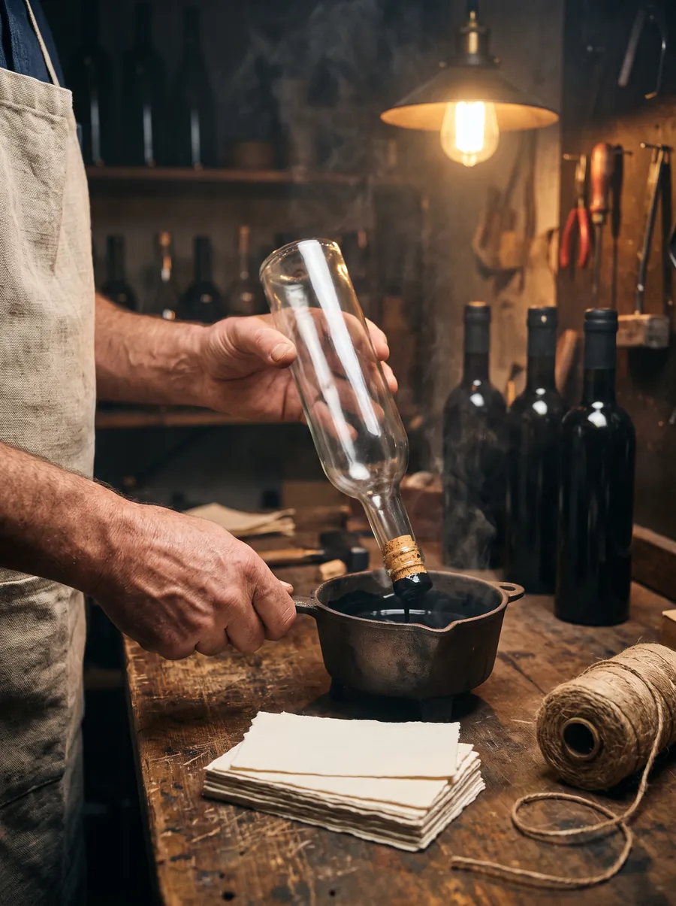

Kolekcja
Jak powstaje
Od zacieru do zakręconej butelki. Każda partia przechodzi przez tę samą kolumnę i te same ręce.
-

Nastaw
Zacier pracuje tygodniami w szklanych gąsiorach, w chłodzie piwnicy.
-

Destylacja
Na kolumnie D-S V3 od DAB-SPAW z automatem Dest-Master. Bufor wypełniony miedzią wyłapuje siarkę, automat pilnuje temperatury. Przedgon i pogon odcięte — zostaje samo serce.
-

Maceracja
Dąb, trawa żubrowa, owoce, kawa. Każdy smak dostaje tyle czasu, ile potrzebuje.
-

Butelkowanie
Ręcznie: rozlew do butelek, nakrętka i etykieta. Każda butelka z jednej, krótkiej serii.
Cennik
Ceny za butelkę. Puste butelki chętnie przyjmę z powrotem.
| Trunek | Moc | 0,5 L | 1 L |
|---|
Jak zamówić
- Dodaj butelki do zamówienia — przy każdym trunku wybierasz 0,5 L albo 1 L.
- Otwórz zamówienie, wpisz imię i skopiuj gotową listę.
- Wyślij ją na Messengerze albo WhatsAppie. Odbiór osobisty, płatność przy odbiorze.